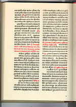
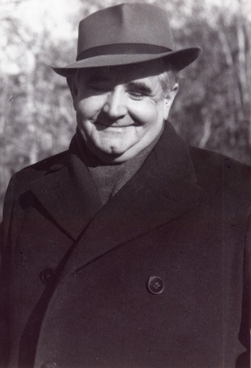

Književnost
Počeci Hrvatske pismenosti sežu u srednji vijek. Hrvati pišu na glagoljici, bosančici i latinici. Simbol početka hrvatske književnosti je Bašćanska ploča. Ljetopis popa Dukljanina najstariji je hrvatski ljetopis. Važan je i glagoljički Zapis popa Martinca. U 14. stoljeću razvija se i lirsko pjesništvo većinom vjerskog karaktera. Nositelji književnog života su većinom svećenici i glagoljaši. Najstarija je božićna pjesma U se vrime godišća prevedena s latinskog. Jedan od najstarijih zapisa na latinici je pobožna Šibenska molitva nastala oko 1347. godine. Hrvojev misal je najljepši i najbogatije ilustrirani glagoljski rukopis hrvatskoga srednjovjekovlja. Misal po zakonu rimskog dvora tiskan 1483. godine je hrvatski prvotisak otisnut 28 godina nakon Gutenbergove četrdesetdvoredne Biblije i prvi je misal u Europi koji nije tiskan latiničnim slovima.
Humanizam se najjače očitovao u priobalnim gradovima. Najvažniji hrvatski humanisti su Ivan Česmički, Juraj Šižgorić, Antun Vrančić i Ilija Crijević. Bogatstvo hrvatske renesansne književnosti može se uočiti po brojnosti i raznolikosti književnih oblika. Marko Marulić se naziva ocem hrvatske književnosti s najvažnijim djelima Judita na hrvatskom i Davidijada na latinskom jeziku. Petar Hektorović piše putopisni spjev Ribanje i ribarsko prigovaranje, a Petar Zoranić prvi hrvatski roman Planine. Najznačajniji pjesnici su Šiško Menčetić, Džore Držić, Mavro Vetranović, Brne Karnarutić i Hanibal Lucić s pjesmom. Najvažniji renesansni komediograf je Marin Držić, a najpoznatije komedije su mu Dundo Maroje, Novela od Stanca i Skup.
U baroku uvjetovano turskim osvajanjima i rascjepkanošću zemlje djeluju četiri regionalna književna kruga. Glavni i najplodonosniji je onaj iz Dubrovnika. Najvažniji predstavnik je Ivan Gundulić s djelima Suze sina razmetnog, Dubravka i Osman. Ostali predstavnici su Ivan Bunić Vučić, Junije Palmotić i Ignjat Đurđević. Slijedi dalmatinski književni krug te književnost Banske Hrvatske i Slavonije. Nikola Zrinski, Fran Krsto Frankopan, Katarina Zrinska, Juraj Habdelić i Antun Kanižlić najvažniji su predstavnici. Hrvatskom književnosti 18. stoljeća dominira barok, prosvjetiteljstvo i klasicizam, a javljaju se i neke značajke predromantizma. Iznimno veliku popularnost postiže Razgovor ugodni naroda slovinskog Andrije Kačića Miošića. Iz tog razdoblja valja spomenuti Matiju Petra Katančića, Matiju Antuna Reljkovića i Tituša Brezovačkog.
Romantizam se javlja za vrijeme hrvatskog književnog preporoda koji traje od 1813. do 1860. godine, a karakterizira ga nacionalno buđenje. Ljudevit Gaj postaje predvodnikom preporodnih nastojanja, a ostali predstavnici su Pavao Štoos, Stanko Vraz, Dimitrija Demeter, Ivan Mažuranić i Petar Preradović. Protorealizam se još naziva i Šenoinim dobom po najvažnijoj osobi tog razdoblja Augustu Šenoi. Njegova pojava simbolizira prodor hrvatske umjetnosti riječi u šire čitalačke mase. Hrvatski realizam traje od 1881. do 1890., a najvažniji predstavnici su pravaši Eugen Kumičić i Ante Kovačić te Ksaver Šandor Gjalski, Josip Kozarac, Vjenceslav Novak i Silvije Strahimir Kranjčević.
Hrvatska moderna traje od 1892. do 1916. Najznačajniji književnici tog razdoblja su Antun Gustav Matoš, Ivo Vojnović, Dinko Šimunović, Fran Galović, Dragutin Domjanić, Vladimir Vidrić, Ivan Kozarac i Vladimir Nazor. U Zagrebu se 1900. osniva Društvo hrvatskih književnika. Najvažniji predstavnici hrvatske književnosti u razdoblju 1914. do 1929. su Ivo Andrić i Antun Branko Šimić. Najvažniji književnik 20. stoljeća je Miroslav Krleža. Predstavnici nove generacije su Tin Ujević, Dobriša Cesarić, Dragutin Tadijanović, Ivan Goran Kovačić. Najvažniji predstavnici druge moderne su književnici okupljeni oko časopisa Krug nazvani krugovaši poput Slobodana Novaka, Josipa Pupačića, Vlatko Pavletić i Vlade Gotovca, a priklonili su im se i Jure Kaštelan i Vesna Parun. U postmoderni djeluju Ivo Brešan, Ivan Aralica i Pavao Pavličić. U anketi iz 2009. godine među građanima Hrvatske najpoznatijim hrvatskim pjesnikom proglašen je Tin Ujević, a slijede Dobriša Cesarić, Vesna Parun, Dragutin Tadijanović i Antun Branko Šimić.
Znanost
Mnogo značajnih znanstvenika i izumitelja potječe iz Hrvatske. Slavoljub Eduard Penkala je izumitelj mehaničke olovke, a Nikola Tesla je izumio generator izmjenične struje, transformator i okretno magnetsko polje. Tesla je često nazivan čovjek koji je izumio dvadeseto stoljeće. Faust Vrančić izumio je padobran, a Ivana Lupis-Vukić izumitelj je torpeda. Ivan Vučetić izumitelj je daktiloskopije, sustava identifikacije pomoću otisaka prstiju. Antun Lučić je zaslužan za izum prve naftne bušotine. Najznačajniji znanstvenici su Ruđer Bošković, Dragutin Gorjanović-Kramberger, Andrija Mohorovičić i Milutin Milanković. Ivan Lučić se naziva ocem hrvatske historiografije, a ostali važni povjesničari su Juraj Rattkay, Ivan Kukuljević Sakcinski, Franjo Rački, Tadija Smičiklas, Vjekoslav Klaić i Ferdo Šišić.
Umjetnost
Hrvatska je dala značajne kipare poput Jurja Dalmatinca i Ivana Meštrovića, slikare Vlaha Bukovca, Mata Celestina Medovića, Ivana Generalića, Julija Klovića, Joze Kljakovića, Ede Murtića, Krste Hegedušića, Ivana Rabuzina, književnice Marije Jurić Zagorke i mnogih drugih.
Misal po zakonu rimskog dvora
Miroslav Krleža
Nikola Tesla